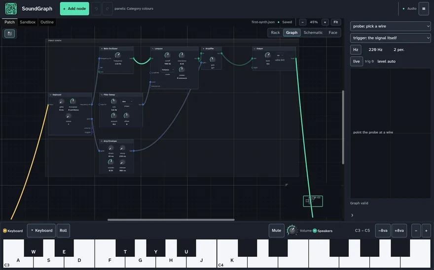
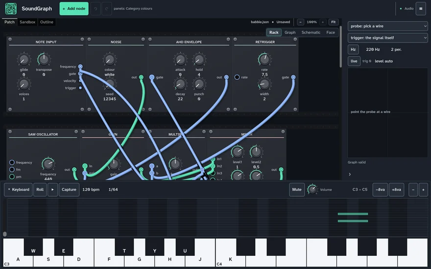
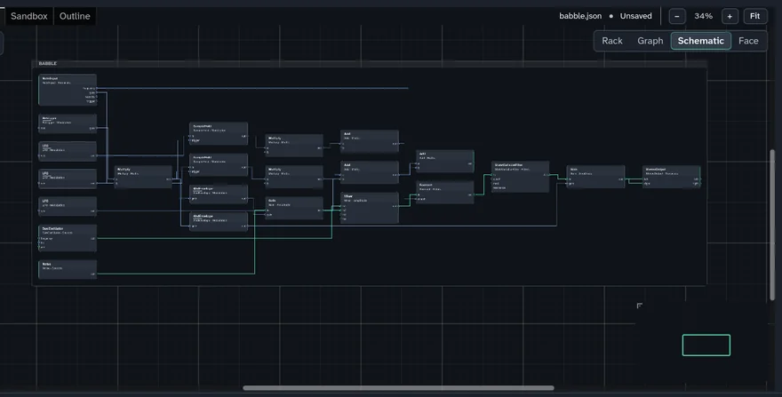
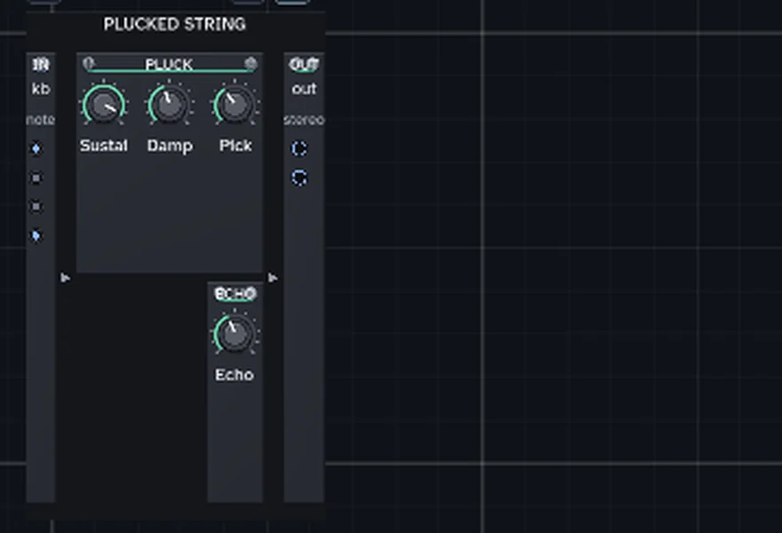

Draw a sound. Understand every connection.
Most synthesizers expose controls. SoundGraph exposes relationships: where a signal begins, what changes it, and why the result sounds the way it does.
Below is a working patch. Press Start audio, then move the filter cutoff and watch which part of the graph lights up.
SoundGraph releases at Knobcon 2026 — September 11–13, Chicago.
The graph
Audio runs along the thick lines, control along the thin ones. Rest your pointer on a cable to follow one signal — click it to keep it. Select a node to find it in the patch source.
Want the whole instrument? Open the full editor — add nodes, drag cables, keep what you make.
Controls
Start audio to load the patch's control surfaces.
Play
Use your computer keyboard too — a w s e d … plays a chromatic octave. z and x shift octave.
What the graph is doing
One instrument. Different ways to see it.
The desktop editor shows the same patch as a graph, a rack of hardware, a schematic, or a performance panel — one file, four honest views of it. These are real screenshots, not mockups.




An open project
The source
Everything on this page — the engine, the patches, the editors — is developed in the open. Read it, build it, file what you find.
The desktop application
The first public release arrives at Knobcon 2026, September 11–13 in Chicago. Joining the updates list is the way to get it the day it exists.
Support the work
SoundGraph is a Mutant Factory project. Right now the most helpful things are ears and words: play it, join the list, tell one person who would care.